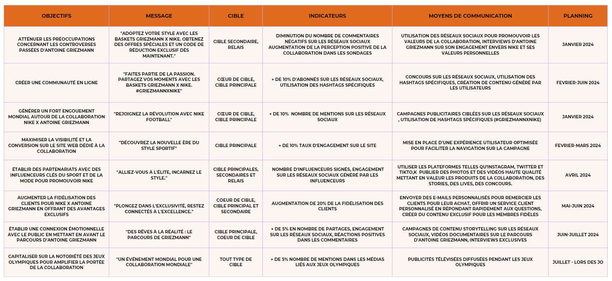

NIKE & ANTOINE GRIEZMANN
Enoncé devoir Nike
Concevoir la stratégie de communication digitale de la marque Nike, en s'appuyant sur les cours de Stratégie de communication et de Webmarketing.
Nike lance une nouvelle collaboration avec un athlète professionnel reconnu dans sa discipline autour d'une nouvelle basket. Le lancement est prévu au mois de juillet en ouverture des JO 2024 à Paris.
STORYTELLING
C’est en 1962 que les deux fondateurs, William Bowerman et Philip Knight, se lancent dans le projet de Nike. Auparavant appelé Blue Ribbon Sports, le premier modèle d’affaire consiste en la revente de chaussures importées du Japon. Lorsque les entreprises partenaires de BPS essaient de pénétrer eux même le marché américain, les deux compères décident de créer la chaussure « américaine » pour les sportifs. De cela naît Nike en 1971 dans l’Oregon. La stratégie commerciale de Nike n’a pas évolué depuis, le but étant de rester toujours plus proche des athlètes. Depuis près de 50 ans, l’objectif de la marque n’a pas cessé d’être la recherche de solutions innovantes pour faciliter la pratique du sport. D’abord créée pour les athlètes uniquement, elle rayonne aujourd’hui dans la grande majorité des disciplines sportives.
CONTEXTE
Le ton de Mitulugia Umana est à la fois festive, envoûtant et empreint de la passion qui anime notre brasserie artisanale. Nousadoptons une approche conviviale, invitant nos consommateurs à embarquer pour un voyage sensoriel à travers les saveurs etla mythologie grec. Notre tonalité reflète l'authenticité de notre engagement envers la tradition brassicole et l'amour que nousavons pour la Corse. L'esthétique visuelle est soigneusement travaillée pour évoquer les différents Dieux Grecs, tout en mettanten valeur nos bières artisanales aux couleurs riches et aux étiquettes évocatrices.
SWOT
FORCES
Le lancement est stratégiquement planifié en juillet, coïncidant avec la
participation d'Antoine aux Jeux olympiques de 2024 à Paris, créant ainsi
une plateforme mondiale pour présenter la nouvelle ligne de chaussures. La
collaboration profite de la popularité mondiale d'Antoine Griezmann, offrant une visibilité instantanée à la nouvelle ligne de baskets. Le design personnalisé conçu par le footballeur ajoute une dimension unique et authentique au produit, renforçant son attrait.
OPPORTUNITE
Une collaboration approfondie avec le club d'Antoine pourrait être une opportunité stratégique pour renforcer la connexion avec les fans du joueur et élargir la portée de la collaboration. De plus, cette initiative pourrait conduire à de nouveaux partenariats de sponsoring, renforçant ainsi la position de Nike dans le monde du football.
FAIBLESSE
Cependant, la popularité du joueur peut attirer des détracteurs en raison des polémiques passées. De plus, le fait qu'Antoine quitte Puma pour rejoindre Nike pourrait susciter des comparaisons et une concurrence directe. Il est impératif de se démarquer rapidement pour éviter toute ombre potentielle de la part de la marque précédente.
MENACES
La concurrence intense dans l'industrie des articles de sport, avec des concurrents comme Puma et Adidas, pose une menace pour Nike. Puma, ancien sponsor d'Antoine Griezmann, pourrait tenter de perturber la nouvelle collaboration en lançant des campagnes concurrentes ou en réduisant ses prix. De plus, la forte présence numérique de ces concurrents sur les réseaux sociaux constitue une menace pour Nike.
Cœur de cible - Athlètes professionnels et sportifs de haut niveau
Identité : Principalement des hommes, âge moyen entre 25 et 35 ans, professionnels du sport ou athlètes de haut niveau.
Position géographique : Présents à l'échelle mondiale, concentrés dans les régions où le sport de haut niveau est populaire (par exemple, les États-Unis, l'Europe, l'Asie).
Habitudes de consommation numérique : utilisent fréquemment les médias sociaux pour suivre les dernières tendances en matière d'équipements sportifs, lisent des analyses de produits et partagent leurs expériences sportives en ligne.
Relais numériques : Les athlètes professionnels partenaires de Nike sont des relais importants, ainsi que les influenceurs du sport et les experts en conditionnement physique en ligne.
Valeurs : Recherchent la performance, l'excellence, la qualité et l'innovation.
Besoins : Des produits haut de gamme, des conseils d'entraînement, des analyses de performances, des produits adaptés à leur sport spécifique.
Cible secondaire - Jeunes amateurs de mode streetwear
Identité : Principalement jeunes adultes, hommes et femmes, étudiants ou jeunes actifs, amateurs de mode et de culture urbaine. (18-25 ans)
Position géographique : Principalement dans les zones urbaines, mais répandus dans le monde entier.
Habitudes de consommation numérique : Actifs sur Instagram et les médias sociaux, suivent des influenceurs de la mode streetwear, recherchent des collaborations de marques.
Relais numériques : Les influenceurs de la mode, les célébrités et les artistes urbains sont des relais essentiels pour atteindre cette cible
Valeurs : Style, individualité, expression de soi à travers la mode
Besoins : Vêtements et chaussures à la mode, collaborations de marques tendance, produits exclusifs.
Cible Principal - Sportifs amateurs et enthousiastes de fitness
Identité : Hommes et femmes, âge varié (de jeunes adultes à des personnes d'âge moyen), diverses professions, passionnés de fitness.
Position géographique : Présents dans les zones urbaines et suburbaines du monde entier.
Habitudes de consommation numérique : Actifs sur les médias sociaux, suivent des influenceurs du fitness, recherchent des astuces et des vidéos d'entraînement en ligne, partagent leurs progrès.
Relais numériques : Les influenceurs du fitness et les experts en conditionnement physique sont des relais importants, tout comme les communautés de fitness en ligne..
Valeurs : Santé, bien-être, esthétique corporelle, performance personnelle.
Besoins : Équipements de fitness de qualité, conseils d'entraînement, motivation, suivi des progrès.
Relais - L‘influenceuse Sherlina
Identité : Sherlina Anyam, âgée de 28 ans, est une influenceuse passionnée de mode et de lifestyle. Elle est née et a grandi à Los Angeles, en Californie.
Position géographique : Sherlina vit à Los Angeles, mais elle voyage fréquemment à travers les États-Unis et dans le monde entier pour assister à des événements de mode et créer du contenu pour ses réseaux sociaux.
Habitudes de consommation numérique : Sherlina est très active sur les médias sociaux, en particulier sur Instagram, où elle partage des photos de ses tenues tendance et de ses aventures de voyage. Elle aime suivre d'autres influenceurs de la mode et de la beauté pour rester à jour sur les dernières tendances.
Relais numériques : Sherlina collabore avec des marques de mode et de beauté pour promouvoir leurs produits auprès de sa communauté d'abonnés. Elle participe également à des événements de l'industrie de la mode.
Valeurs : Sherlina valorise l'individualité, l'expression de soi à travers la mode et le style personnel. Elle croit en l'importance de s'habiller pour se sentir bien dans sa peau.
Besoins : Sherlina est constamment à la recherche de nouvelles pièces tendance et de produits de beauté innovants à partager avec sa communauté. Elle est intéressée par les voyages, la cuisine et le bien-être
OBJECTIFS
1. Établir des partenariats avec 10 influenceurs clés du sport et de la mode pour promouvoir Nike x Antoine Griezmann d'ici juillet 2024, en suivant les signatures et l'impact sur les réseaux sociaux, par une approche proactive et réaliste.
2. Augmenter le trafic du site dédié à Nike x Antoine Griezmann de 50 % et obtenir un taux de conversion de 10 % en inscriptions à la newsletter d'ici fin juin 2024, en utilisant des outils d'analyse web, des campagnes publicitaires ciblées et des incitations attrayantes.
3. Obtenir 1 million de vues sur les vidéos de lancement et générer 100 000 engagements sur les réseaux sociaux pour Nike x Antoine Griezmann d'ici fin juin 2024, grâce à une campagne de marketing intensive et à l'utilisation d'influenceurs.
4. Augmenter de 20 % la fidélisation des clients pour Nike x Antoine Griezmann en offrant des avantages exclusifs, mesurée par le nombre de clients récurrents et leur fréquence d'achat, en utilisant les données de vente pour suivre les progrès avant et après la campagne, et en démarrant les stratégies de fidélisation dès le lancement de la collaboration pour une durée à long terme.
5. Augmenter de 15% le taux de conversion des visiteurs du site en acheteurs de produits de la collaboration Nike x Antoine Griezmann d'ici fin juin 2024 en mettant en place des incitations à l'achat et en offrant une expérience d'achat convaincante.
6. Accroître la reconnaissance de la collaboration Nike x Antoine Griezmann de 40% parmi le public cible d'ici fin juin 2024 en utilisant une combinaison de publicités en ligne, de partenariats d'influence et de contenu de qualité pour augmenter sa visibilité.
7. Augmenter de 50% l'engagement sur les réseaux sociaux pour la collaboration Nike x Antoine Griezmann d'ici fin juin 2024 en créant un contenu attractif et interactif.
8. Créer un lien émotionnel avec le public en partageant l'histoire inspirante d'Antoine Griezmann, en augmentant de 50% les partages et engagements sur les réseaux sociaux par rapport aux autres contenus de Nike, grâce à des campagnes de storytelling, capitalisant sur l'expertise de Nike dans ce domaine, d'ici juin-juillet 2024.
POSITIONNEMENT
Nike a pour mission de créer une collaboration de baskets emblématique avec Antoine Griezmann, offrant une expérience exclusive et authentique qui représente l'esprit du football et de l'innovation. L'ambition de Nike est d'établir sa marque comme la référence ultime en matière de chaussures de sport, en utilisant la renommée mondiale d'Antoine Griezmann pour donner une visibilité inégalée à sa nouvelle ligne de baskets. Ce qui différencie Nike de la concurrence, c'est sa capacité à créer des collaborations authentiques et influentes avec des personnalités de renom comme Griezmann, ainsi que son engagement envers l'innovation, faisant de cette collaboration une véritable expression de la passion et de l'excellence du football.
MESSAGE
Nike lance une collaboration de baskets avec le célèbre footballeur Antoine Griezmann, offrant une expérience exclusive et authentique. Cette initiative vise à établir Nike comme la référence ultime en matière de chaussures de sport, en exploitant la renommée mondiale d'Antoine pour offrir une visibilité sans précédent à la nouvelle ligne de baskets. Cette collaboration se distingue par son engagement envers l'innovation et la créativité, incarnant l'esprit du football. En travaillant en étroite collaboration avec Antoine Griezmann et en lançant la ligne de baskets de manière stratégique, Nike crée une expérience unique et inspirante pour ses clients.
LE TON ET LE STYLE
Le ton et le style de notre communication sont dynamiques, passionnés et visionnaires. Nous adoptons une approche audacieuse et inspirante pour créer un lien émotionnel avec notre public. Notre langage est direct et affirmé, reflétant notre engagement envers l'excellence et l'innovation.
LES MOYENS DE COMMUNICATIONS
Nike investira dans des campagnes publicitaires en ligne ciblées, qui seront diffusées sur des plateformes telles que Google Ads, les réseaux sociaux tels que TikTok, Instagram, Twitter, et les sites Web pertinents. Nike utilisera ses propres comptes sur les réseaux sociaux, ainsi que ceux d'Antoine Griezmann, pour diffuser du contenu promotionnel, des teasers, des vidéos de lancement et des annonces sur la collaboration. Les réseaux sociaux offriront également une plateforme pour interagir directement avec les consommateurs, répondre à leurs questions et recueillir leurs réactions. Nike utilisera sa base de données clients existante pour envoyer des newsletters et des emails promotionnels sur la nouvelle collaboration, offrant des avantages exclusifs aux abonnés, tels que des offres spéciales ou un accès anticipé aux produits.
PLAN DE COMMUNICATION

COMPÉTENCES ACQUISES
Ressource R1.08 : Production graphique
-EXPRIMER-
– AC13.03 | Créer, composer et retoucher des visuels
NOTE : 11,93/20